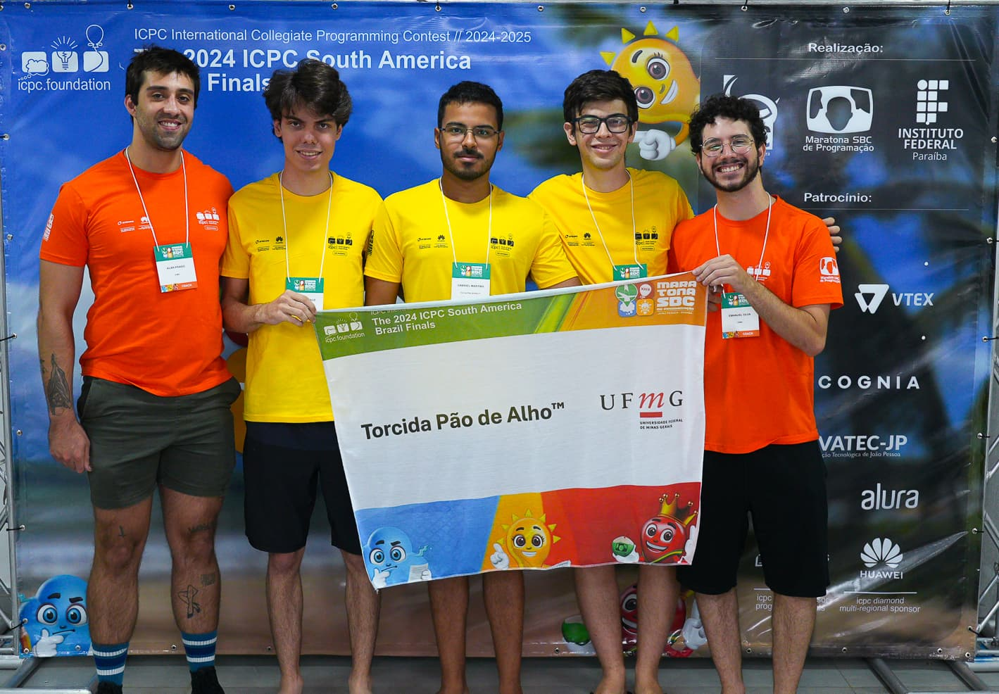
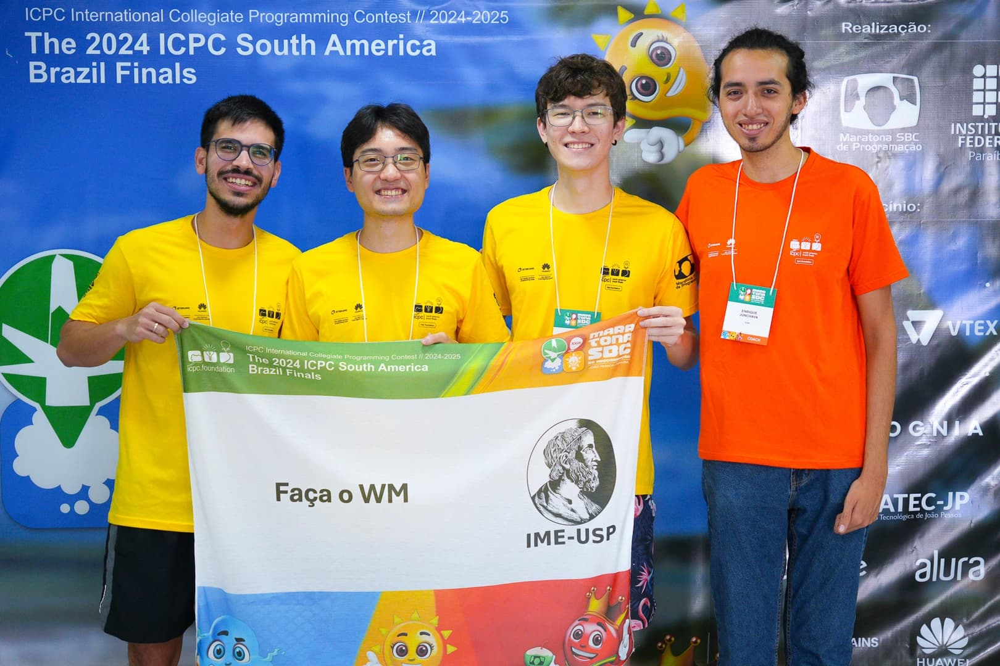
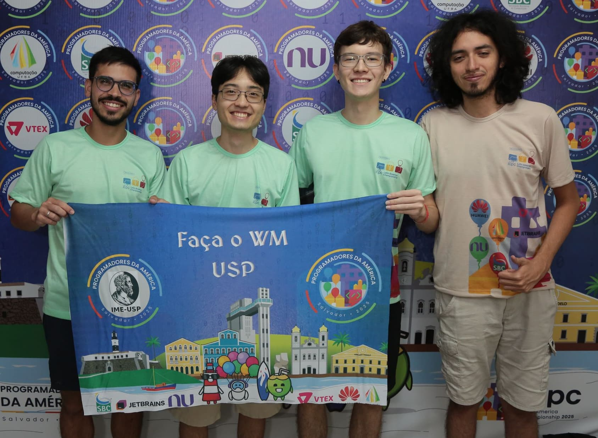
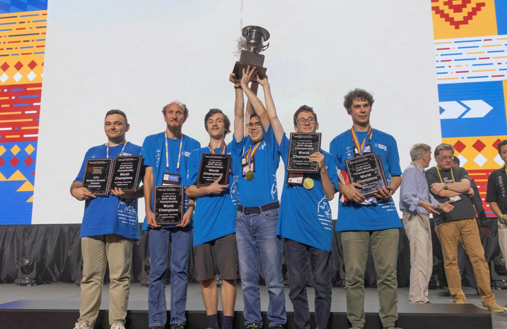

ICPC Brasil: First Phase (MG)
Torcida Pão de Alho, equipe vencedora da Fase Regional do ICPC Brasil 2024, em MG.
O ICPC (International Collegiate Programming Contest) é a competição de programação mais antiga e prestigiada. O torneio desafia times de três estudantes a resolverem problemas complexos sob pressão de tempo e recursos. Com apenas um computador por equipe, a estratégia e a comunicação são tão importantes quanto o código. No Brasil, a Maratona de Programação serve como a eliminatória oficial para as finais mundiais, reunindo os melhores talentos das universidades brasileiras.
O caminho para o World Finals segue uma hierarquia rigorosa:

Torcida Pão de Alho, equipe vencedora da Fase Regional do ICPC Brasil 2024, em MG.

Faça o WM, equipe vencedora do ICPC Brasil 2024.

Faça o WM, equipe vencedora do ICPC Latin América 2025.

Campeões do ICPC Worlds Finals 2025, representando a St. Petersburg State University.
A ICPC World Finals 2026 — referente à edição 25/26 — está marcada para ocorrer nos dias 15 a 20 de
novembro. Porém, isso não impede sua preparação para a próxima competição, que começa em poucos
meses.
Confira as
principais
datas do ICPC Edition 26/27:
| Evento | Local | Data |
|---|---|---|
| Abertura das Inscrições | Online (Site da SBC) | Início de Junho |
| Primeira Fase (Eliminatória) | Sedes Regionais (Brasil todo) | 29 de Agosto |
| Final Brasileira | Uberlândia, MG | 05 a 08 de Novembro |
| ICPC World Finals 2026/27 | A definir | 2027 |
Para os estudantes de Minas Gerais, a Maratona Mineira de Programação é um evento essencial. Ela ocorre anualmente, geralmente antes da Primeira Fase da SBC, servindo como o principal treino para as equipes mineiras.
Embora não classifique diretamente para a Final Brasileira, a MMP simula o ambiente de pressão e o nível técnico dos problemas que os alunos encontrarão na seletiva oficial, sendo fundamental para o entrosamento do time.